Crystalline glazes
A type of ceramic glaze made by potters. Giant multicolored crystals grown on a super gloss low alumina glaze by controlling multiple holds and soaks during cooling
Key phrases linking here: crystalline glazes - Learn more
Details
Crystals can form during cooling and solidification in many kinds of glazes and they can be microscopic or very large, widely scattered or completely covering. Matte glazes (e.g. high CaO) are often such because of a dense mesh of micro-crystals growing on the surface. Unwanted crystallization is called devitrification. However, the term crystalline glaze generally refers to the pursuit of large macro crystals. People are captivated by them because they often seem to float on the glaze and they wrap to match the contour of the object. They can be of incredible size and beauty and have been demonstrated in infinite colors, shapes and patterns. But they only grow if the right conditions are present:
The chemistry: Glazes must have almost zero Al2O3 to produce a melt so fluid that it literally runs off the ware. In such glazes, it is easier for the component oxides to migrate to the site of formation and they have more freedom to arrange themselves in the preferred crystal formation. That being said, if melt mobility can be achieved with considerable Al2O3 present, crystal growth should also be possible. A saturation of ZnO is also required, this is the magic crystallizing oxide. Adequate SiO2 is needed to form zinc-silicate crystals. The ZnO provides the conditions for crystal growth, it is not physically providing nucleation points, but could be considered a catalyst.
The time and temperature: Glazes prone to crystallization have a distinct "zone of crystallization" (e.g. 1900-2000F). Because the glazes melt so early, taking everything into solution, they are fired rapidly to the peak temperature. Subsequently they are cooled to the zone where the crystal-forming material precipitates out and temperature is held there. Experience and experimentation reveal at what temperature they grow best and how long to hold. Finally, firings are flash cooled. The best practitioners in this field do hundreds, even thousands of firings, carefully recording the schedules, recipes, procedures and pictures (an account at insight-live.com is excellent for this).
Most crystals are a different color than the surrounding glaze area (which is reduced in crystal-forming oxides and is thus a 'depletion zone'). Larger crystals grow at the expense of smaller ones in a 'survival of the largest' situation. Crystals demonstrate the phenomenon of phase separation, where a glass melt separates into two or more liquids. Coloring materials tend to preferentially and selectively gather at one of these, (one coloring oxide coloring the crystals, another the glassy areas). Crystal formation is actually a mechanical imperfection in the glass since it is disrupting the homogeneity of the matrix and imposing discontinuities between glass and crystal phases.
The advent of hobby electronic kiln controllers, online communities have brought these glazes within the reach of thousands of potters worldwide. They are accurate enough to make results quite repeatable. That being said, electric kiln elements must be kept in good condition to assure the kiln can follow the programmed schedule.
International shows, lots of available books, research and liberal information sharing by many are a catalyst to the explosion in popularity. The study of these crystals and the conditions that affect their growth has become quite technical.
Crystalline glazes need to be used on low-lignite bodies (ideally containing little or no ball clay), avoiding gas bubble production or body bloating.
Since crystal glazes have a high thermal expansion (because they contain high KNaO) they will craze badly on most clay bodies. Increasing the silica content in your porcelain (as high as 40%) can greatly reduce or even eliminate the crazing (of course this will require careful cooling of the kiln through the quartz inversion phase). While many feel it is decorative, crazing drastically reduces the strength of the fired ware.
Crystalline glazes are most often likely not food safe, and for several reasons. They are flux saturated and the Al2O3, the very thing most needed to make a stable, durable glaze is normally almost zero. That means they will leach and lack fired hardness. In addition, the metallic fluxes are not securely bound chemically to the glass matrix (this is why they crystallize out), so parts of the surface, especially the crystals, are leachable in acids or bases. Crystalline glazes have high thermal expansion and craze, crazed glazes are not considered functional and they severely weaken fired ware. Also, because crystalline glazes have high melt fluidity they will run downward on the inside functional surfaces of ware forming a pool at the base. The thermal expansion of the thick glass mass will almost certainly be higher than the body, thus having the power to impose its cracks onward into the body matrix. This power is often evident when the base of a mug, for example, simply falls off (leaving razor-sharp edges).
Because these glazes have very low (or zero) percentages of clay the slurries do not suspend well in the bucket or harden well during drying. It is common to use CMC gum to improve hardening, but this produces sticky slurries that drip a lot during application a dry slowly. Bentonite additions of around 1-3% can suspend, harden and slow down drying. VeeGum also has been found to work well, but typically less than 1%. VeeGum has an added benefit according to Holly McKeen. She observes: "Not only does it suspend better but than with CMC, the crystals got smaller and blander over time. A few times I applied from an old vs new batch - same formula, side by side, and the new was always best. Now, with VeeGum, no difference".
The firing schedules needed for this type of glaze put extra demands on the relays of electric kilns. This is because schedules that hold or slowly decrease temperature need to switch relays much more often than with typical fast rises or drops. Special kilns are available for crystalline glaze firing, having heavier relays, mercury relays or even solid-state ones.
You will have accidents, where glazes run more than expected and get onto kiln shelves, so a good kiln wash is important. For smaller kilns, it may be practical to make your own shelves (we use calcined alumina, zircon or refractory kaolin/grog mixes for this). This can be a benefit since you can make them much thinner so there is less of a heat-dampening effect on the programmed firing schedule.
Related Information
Crystalline glazed vase by Rod and Denyse Simair
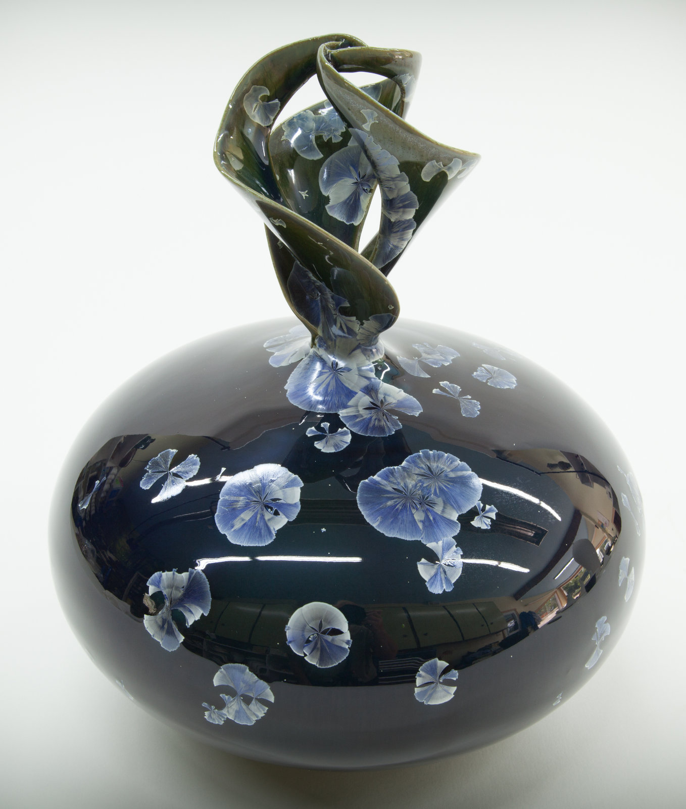
This picture has its own page with more detail, click here to see it.
Internationally acclaimed ceramic artists Rod & Denyse Simair have represented Canada in major exhibitions in Europe and North America. They are the recipients of the highest international honour that has been awarded exclusively for Crystalline, Le Grand Prix du Jury, at Crystallines 2005 in France. The Simairs combine their talents with Rod's elegant and masterfully thrown original porcelain designs harmoniously brought to fruition through Denyse's personally researched, formulated and fired macro-crystalline glazes. They describe their pieces as "heirloom keepsakes of aesthetically inspiring ceramic art to cherish now and for generations to come".
Scattered crystals on a highly melt fluid zinc free glaze
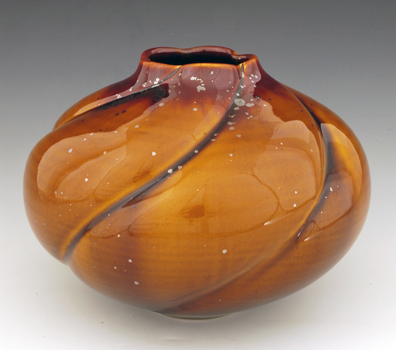
This picture has its own page with more detail, click here to see it.
Crystals do not just grow on zinc glazes. These were fired by Bill Campbell. The glaze is lithium fluxed and colored with iron. There is a metallic halo around the crystal, the crystals are typically hexagonal.
Crystalline plate made by Holly McKeen.
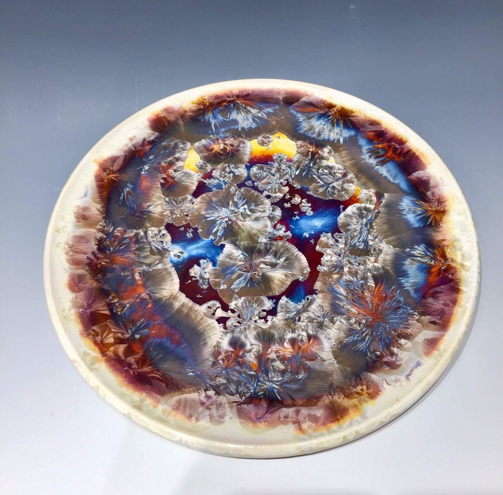
This picture has its own page with more detail, click here to see it.
Notice the glaze is not crazing. That is because this is a high-silica porcelain.
Crystalline glazed vase by Rod and Denyse Simair
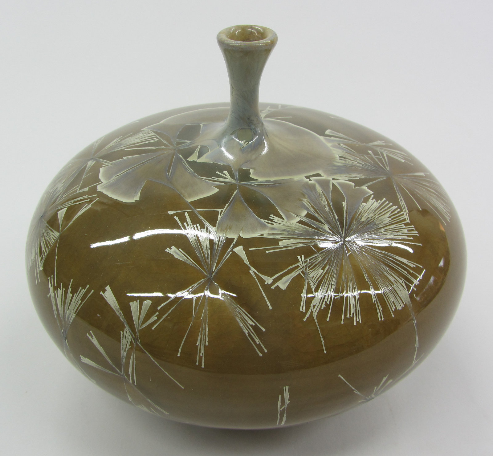
This picture has its own page with more detail, click here to see it.
This award-winning couple are-all in on crystal glazes. They have learned that success is about data. A lot of data. Thousands of pictures, hundreds of firing schedules, hundreds of recipes, endless notes all come together in the growth of crystals like these! Notice the clear background, no micro-crystals fogging it up. Notice that two fundamentally different types of crystals are being grown. Not to be ignored is the throwing skill it takes to make a porcelain piece like this, these are not small pieces.
Growing incredible glaze crystals is also about the chemistry

This picture has its own page with more detail, click here to see it.
Closeup of a crystalline glaze. Crystals of this type can grow very large (centimeters) in size. These grow because the chemistry of the glaze and the firing have been tuned to encourage them. This involves melts that are highly fluid (lots of fluxes) with added metal oxides and a catalyst. Typically, the fluxes are dominated by K2O and Na2O (from frits) and the catalyst is zinc oxide (enough to contribute a lot of ZnO). Because Al2O3 stiffens glaze melts, preventing crystal growth, it can be almost zero in these glazes (clays and feldspars supply Al2O3, so these glazes have almost none or either of them). The firing cycles involve rapid descents, holds and slow cools (sometimes with rises between them). Each discontinuity in the cooling curve creates specific effects in the crystal growth. These kinds of glazes are within the reach of almost anyone today since electronic controller-equipped kilns are now commodity items - one can fiddle with the chemistry and manage the testing of glazes in their insight-live.com account. But be ready for work, others on this path have done hundreds of firings to perfect a recipe and scedule.
Raw and calcined zinc oxides in a crystalline glaze
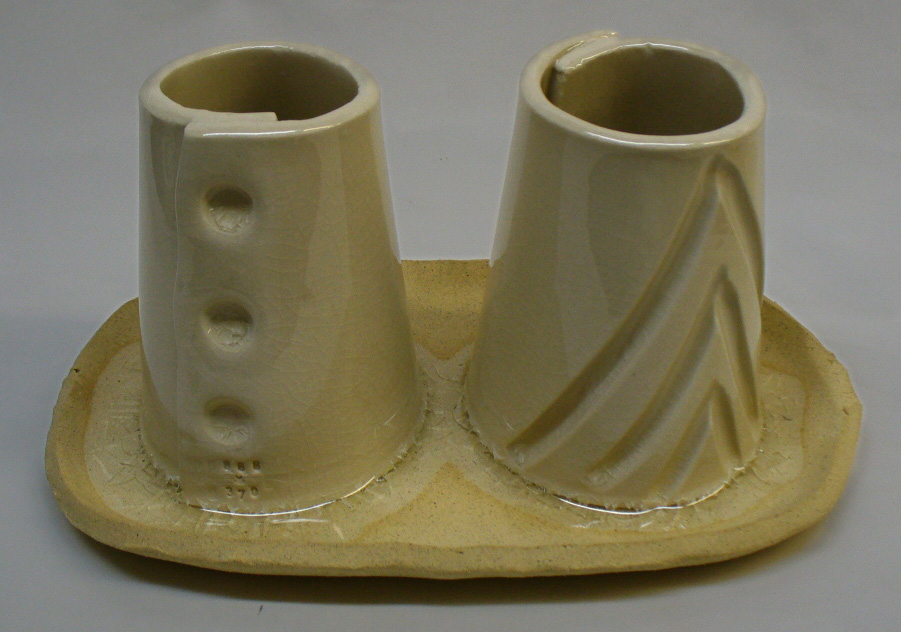
This picture has its own page with more detail, click here to see it.
Zinc oxide calcined (left) and raw (right) in typical crystalline glaze base (G2902B has 25% zinc) on typical cone 6 white stoneware body. This has been normally cooled to prevent crystal development. The melting pattern is identical. Note how badly these are crazed, this is common since crystalline glazes are normally high in sodium.
Crystalline glazes normally craze:
Here is one way to fix that
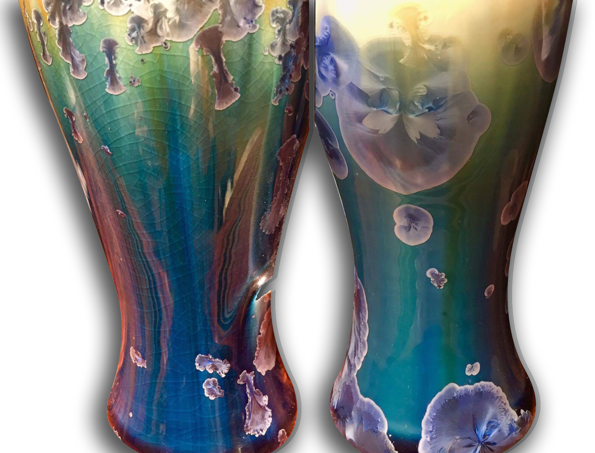
This picture has its own page with more detail, click here to see it.
The mug on the left, made by Holly McKeen, is a typical cone 10 Grolleg kaolin mullite porcelain (highly vitrified, low in residual quartz). Its glaze is crazed. Crystalline glazes are high in Na2O, making crazing virtually certain. Since most pieces are decorative, crystal glazers just accept this as part of the process. But these are functional mugs, the glaze needs to fit (if only for ware strength).
But what if the thermal expansion of the body could be significantly raised? The body on the right is Crystal Ice, it contains 40% silica (vs 20-25% in a typical porcelain). The percentage of Nepheline has been reduced, lowering vitrification to about 1.5% porosity. As a result, more quartz survives undissolved and less mullite develops, raising the body’s thermal expansion. The result is a body with a much higher thermal expansion, so it can not only relieve the glaze tension but actually put a squeeze on it. There is a downside: These are less resistant to dunting and thermal shock failure during use.
Could the glaze be adjusted instead? Yes. Some of the Na2O could be substituted for Li2O, the latter is also a strong melter but has a much lower thermal expansion. Glaze chemistry could be used to source it from Spodumene (to avoid solubility issues with lithium carbonate). However, zinc-silicate crystalline glazes are very sensitive systems, so the more lithia is introduced the more likely the effect on the firing window, crystal size/density and background clarity.
The melt fluidity of a crystalline glaze
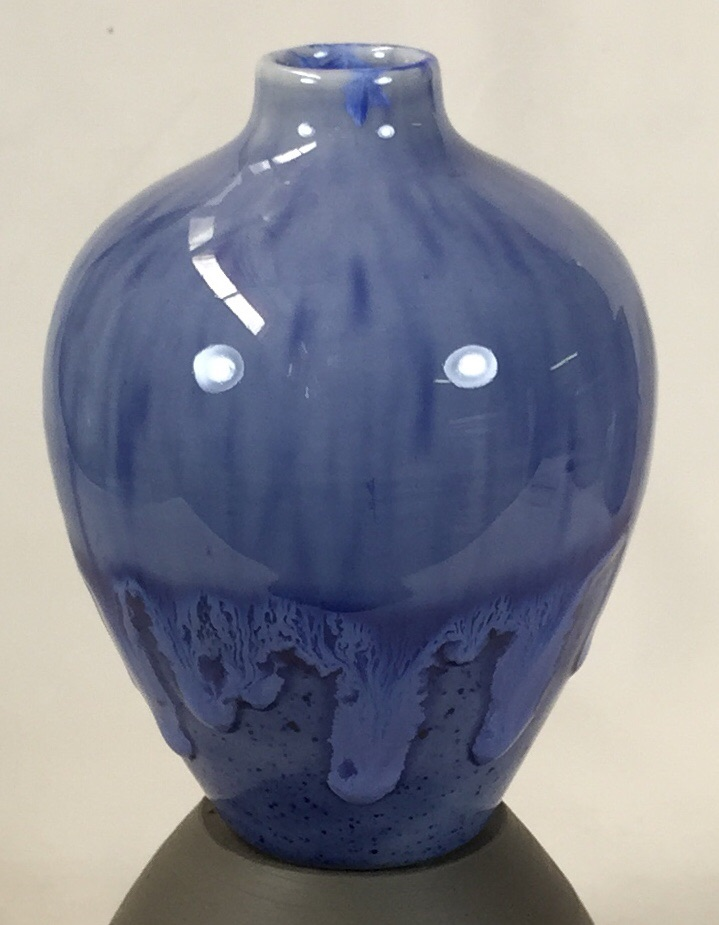
This picture has its own page with more detail, click here to see it.
The upper half of this small vase has a high-zinc crystal glaze. The lower half is just a functional cone 6 transparent (with the same amount of cobalt to produce the blue color). The piece was not slow-cooled to grow the crystals. The high degree of melt fluidity is clearly visible.
Example of catch basin dish used for crystalline glazing
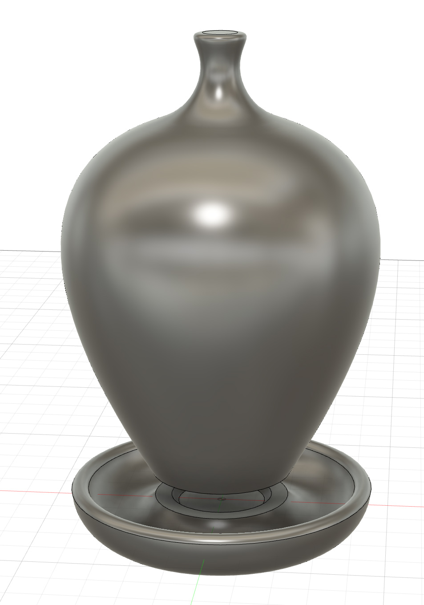
This picture has its own page with more detail, click here to see it.
The running glaze collects in a catcher sized to match the base of the piece. A calcined alumina or kiln wash paste (made using CMC gum or other binder) is applied to the base of the piece so that it does not stick to the catcher. After firing the catcher is broken off and the remaining sharp edges around the base of the piece are ground off.
This crystalline glaze has zero clay yet brushes well. Here is why.
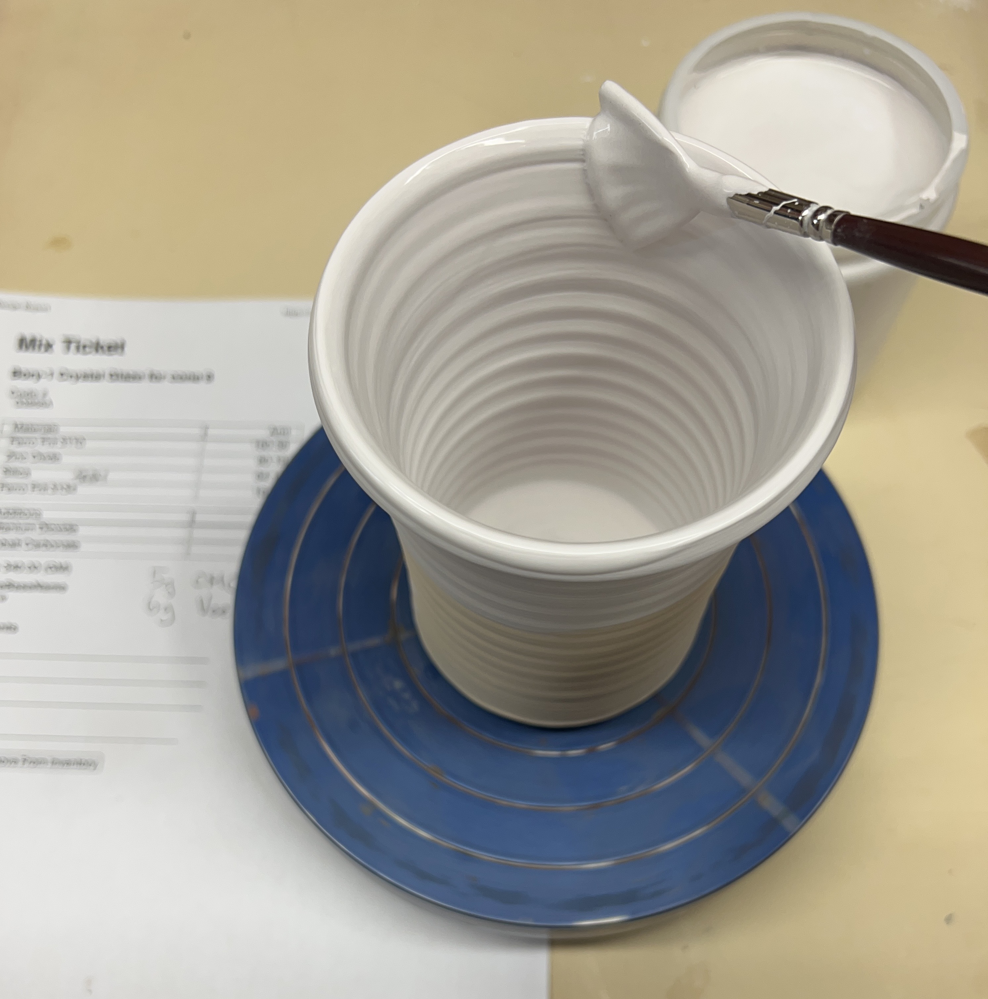
This picture has its own page with more detail, click here to see it.
A 500ml jar of this was made using 340g powder, 440g water, 5g CMC gum and 6g of Veegum. This is the most VeeGum that would likely ever be used in this type of glaze. But it suspends and gels the slurry well. This glaze must be gelled because it contains no clay to suspend it. But there is a problem: The amount of gel needed means it is impossible to remove the agglomerates of CMC and VeeGum by blender mixing (the slurry simply won't move enough in the jar to expose all of it to the propeller). That means either ball milling for an extended period or creating an initial batch that only includes the CMC gum and mixing that in the blender very thoroughly first. Then, on high speed, slowly pour in the VeeGum until it gels enough to suspend everything (don't add too much or it will over-gel immediately or overnight). Regular brushes won't load the gelled glazes. But a fan brush like this works surprisingly well and creates and even laydown (very important with crystal glazes). If you have only used commercial brushing glazes you may take the CMC gum they contain for granted. Dipping glazes made by potters normally contain no gum. After dipping the bisque typically absorbs the water quickly and the glaze dries to the touch in seconds. Trying to brush such a glaze would be impossible. But adding gum slows the drying dramatically and enables it to flow beautifully for brushing.
One secret of crystal glazes is firing schedule
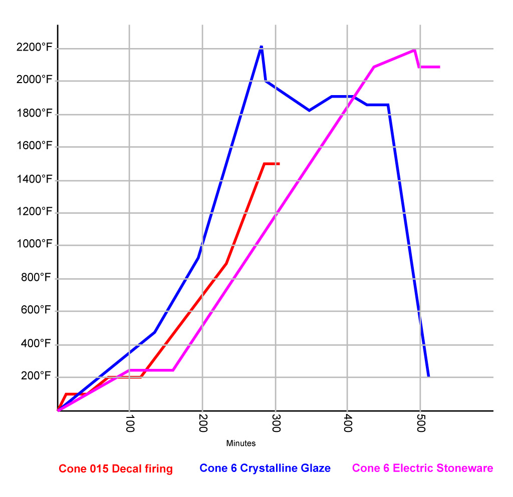
This picture has its own page with more detail, click here to see it.
The blue line is a crystal glaze firing schedule. While it reaches the same temperature as a typical glaze firing (purple line) it is different in how it does so. Notice key differences (while cone 10 is most common for this type of glaze, we will discuss theoretical differences in a cone 6 version):
-The steep climb: Crystallization needs a clean bubble-free melt, no lingering in temperature zones where they might start prematurely.
-The steep drop to 2000F: Crystals typically grow during a long soak in the 1900–2000°F nucleation zone.
-If the temperature is simply held steady at 1950°F only one type and size of crystal would form, likely smaller and crowding out others. The ups and downs are about manipulating the thermodynamics and kinetics of crystal formation — nudging new crystals to form or existing ones to grow differently.
-Cooling and then raising the temperature in the nucleation zone can re-dissolve smaller crystals or unstable nuclei. Then, cooling again encourages new crystal nucleation, rejuvenates existing ones or even changes the pattern of their growth.
-In the upper range of the nucleation zone, faster diffusion produces larger, more spread-out crystals. In the lower range, slower diffusion produces smaller, tighter crystals or detail-rich growth.
-Crash-cool to finish: Drop melt viscosity quickly to halt all crystal formation - this preserves a clean background and prevents blurring of crystal edges.
Crystalline firings are about precision and timing: Get in fast, melt everything, play within the range where crystals want to grow to get the type, distribution and size you want - and then get out. It is not difficult to see why crystal glazers may do thousands of test firings to discover the curve that produces what they want. The nucleation zone depends on firing temperature and glaze chemistry, testing is likewise required to discover it. Meticulous record keeping is critical to success; not surprisingly, many crystal glazes do it in an account at insight-live.com.
Crystalline Glazes are a Triumph of DIY
No short cuts, just hard work, patience and good records
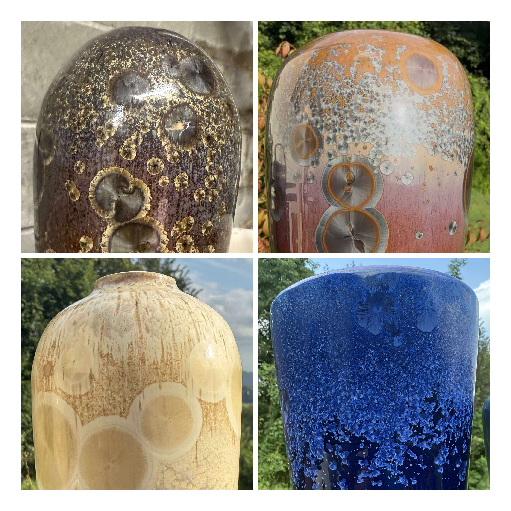
This picture has its own page with more detail, click here to see it.
Michael Williams first applied his experience in tile-making to create crystal-glazed tile. After discovering little demand, he learned to throw and now makes these beautiful vases to showcase the magic. He explains the secret behind getting crystalline glazes something like this:
- Dozens and dozens of firings to figure out the ramps, temperatures and final temperature.
- Taking courses and absorbing as much as possible.
- Researching and frequenting places online, where people who know about this, are talking. This is where he finds the important things the courses leave out.
- Careful record-keeping that links details of crystal appearance with the glaze recipes, their chemistry and each ramp in the firing (other Insight-live users developing crystalline glazes are keeping track of hundreds of firing schedules and thousands of pictures that go with them!).
Michael sent the last picture (bottom right) as an example of one that is missing the final ramp in its firing (thus the fringes on the crystals). He even has a technique of etching the crystals using a powerful base (not an acid).
Inbound Photo Links
|
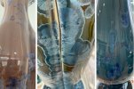 Serious cracking in a crystalline-glazed P700 Grolleg porcelain. Why? |
Links
| Glossary |
Glass vs. Crystalline
In ceramics, understanding the difference between what a glass and crystal are provides the basis for understanding the physical presence of glazes and clay bodies. |
| Glossary |
Phase Separation
Phase separation in glaze melts creates microscopic discontinuities that affect transparency, color variegation, matte surfaces, and reactive glaze effects. |
| Glossary |
Crystallization
Ceramic glazes form crystals on cooling if the chemistry is right and the rate of cool is slow enough to permit molecular movement to the preferred orientation. |
| Glossary |
Metallic Glazes
Non-functional ceramic glazes having very high percentages of metallic oxides/carbonates (manganese, copper, cobalt, chrome). |
| Glossary |
Firing Schedule
Designing a good kiln firing schedule for your ware is a very important, and often overlooked factor for obtained successful firings. |
| Glossary |
Ceramic Glaze
Ceramic glazes are glasses that have been adjusted to work on and with the clay body they are applied to. |
| Oxides | ZnO - Zinc Oxide |
| Oxides | Al2O3 - Aluminum Oxide, Alumina |
| Properties | Glaze Variegation |
| Properties | Glaze Crystallization |
| URLs |
http://www.tiltonpottery.com
The Awesome Crystalline Glaze Gallery of Tilton Pottery |
| URLs |
http://www.puttgarden.com/crystal/Page-crystal.htm
Comprehensive crystal glaze links page: Phil Hamlin |
| URLs |
http://www.puttgarden.com/crystal/tech/page.html
Crystal glazes technical information links from Phil Hamlin |
| URLs |
https://www.amazon.ca/Crystalline-Glazes-Understanding-Process-Materials/dp/1490396357
Crystalline Glazes: Understanding the Process and Materials Get this 2013 book on Amazon.com, all aspects of developing, mixing, coloring, applying and firing to maximize the beauty of these glazes are covered in detail. |
| Firing Schedules |
Cone 6 Crystal Glaze Plainsman
Five-Step firing with no holds |
| Materials |
Zinc Oxide
A pure source of ZnO for ceramic glazes, it is 100% pure with no LOI. |
| Typecodes |
Crystalline Glaze Recipes Fara Shimbo
These are from Fara's Crystal Glazes books 1 and 2. Most are the frit 3110, zinc, silica base recipe (50:25:25) with small material additions at the expense of silica. |
 PayPal | No tracking, No ads, No paywall, No transient content! Just organized, concise information constantly updated and improved. Was this helpful? Consider supporting me. |
| By Tony Hansen Follow me on        |  |
Got a Question?
Buy me a coffee and we can talk 

https://digitalfire.com, All Rights Reserved
Privacy Policy